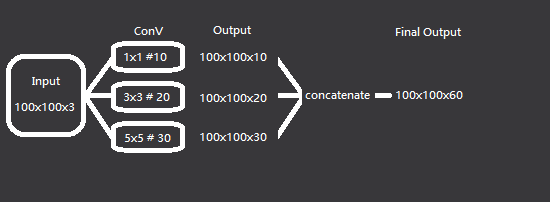

目錄
基本序列模型
多尺度架構
捷徑架構
多尺度架構
多尺度架構能夠在 GoogLeNet 中的 Inception 架構中廣泛看到，其概念想法為利用不同卷積核大小的卷積層來給予網路更多的選擇去擷取適當的特徵，在架構上，我們能夠把多尺度架構分成兩個步驟──分散及匯集；分散指的是將輸入分散至不同大小卷積核的卷積層，匯集則是將不同卷積層的結果重新組裝成一個張量，所以在進行卷積計算時，會利用 Padding 來確保輸出張量的長寬是一致的，圖解的話像是這種感覺。

可以看到為了進行多尺度的計算，我們無法去操作特徵圖的長寬，這意味著龐大的參數計算，為了緩和計算負擔，我們可以利用多次卷積降低兩維的大小，將資訊累積在深度上，多尺度計算時也可以利用 1x1 的卷積核來降低深度維度，使用這些技巧來建構多尺度架構，在結果與參數使用量上取得適當的平衡吧。
接下來將會用簡單的範例來示範如何建構一個多尺度架構。
import tensorflow as tf |
使用 model.summary() 可以更清楚的看到架構。

這裡值得一提的是，在進行 concatenate 時，需要指定接合的維度。
tf.keras.layers.Concatenate(axis=-1, **kwargs) |
在這裡因為我們的卷積層輸出為 (None,15,15,10) 、 (None,15,15,20) 、 (None,15,15,30) ，需要接合的為第三維度，所以需要設定 axis=3 ，若想了解更多資訊，可以參考 Keras 手冊
在範例中，我們只建構了一層最簡單的多尺度架構，在使用上這樣的一層只是一個 Block ，利用堆疊這些 Block 如同在建構一般卷積層一般，更深的層數意味著更複雜的特徵組合，然而比起普通卷積，多尺度的一層中包含了不同卷積核的特徵，多層疊加下會得到更複雜的特徵，給予我們設計網路架構時多了一種思路。